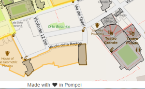

Strumenti e dati
La traccia Archeologica Academia ha avuto come obiettivo la realizzazione di uno strumento di navigazione ed implemetazione della “carto-bibliografia” di Pompei, in grado di associare con immediatezza un luogo fisico della città antica ad una risorsa bibliografica ad esso riferita.
Il progetto Pompeii Bibliography and Mapping Project (di cui leggerete di più in un altro post) ne aveva già avviato la realizzazione. Esso nello specifico ha implementato un database di citazioni bibliografiche e un repository dei testi disponibili per intero. Punto di partenza sono state le quasi quindicimila citazioni bibliografiche raccolte in Nova Bibliotheca Pompeiana (NBP) da Laurentino Garcia y Garcia, aggiornate al 2011. Allo stato attuale questo database consta di 9292 record, 5304 record parziali e 1326 record incompleti).


Ad ogni luogo fisico di Pompei, è stata associata la lista dei toponimi utilizzati per identificarlo (es. nella figura sopra, la lista dei toponimi associata a quello più comunemente noto come Teatro Grande: Teatro Scoperto, Tragico, “delle Fontane” oppure Theatrum, Theatrum Maius o Nudum). A ciascuna delle variazioni toponomastiche, è associata la lista delle risorse biliografiche disponibili (come nella figura a lato relativa sempre al Teatro Grande).
Durante l’hackathon del 19 e 20 giugno scorsi abbiamo raccolto su Zotero un dataset di oltre 18000 citazioni bibliografiche. Partendo da questi dati e dal lavoro di digitalizzazione della base cartografica iniziato da PBMP e rimodellato dal team della track “Pompeiorum Libera Tabula” era già possibile “mappare le pubblicazioni”. Per associare in modo corretto e univoco un luogo fisico alla corrispondente citazione bibliografica, senza disegnare ogni volta la geometria poligonale di riferimento, abbiamo utilizzato la suddivisione della città in regiones, insulae e civici. Essa ci ha consentito di identificare ogni poligono tramite un codice ben preciso, ovvero la successione del numero in cifre romane della regio e del numero in cifre arabe dell’insula ed il civico: es. il “codice” del Teatro Grande è VIII-7.20. Tramite scraping si è importato l’elenco delle insule e relativi civici per ogni regio da Wikipedia (es. Regio VIII).
Zotero fornisce una API che consente di accedere ai tag associati alle citazioni bibliografiche, consentendo poi di filtrarle in base ad essi. Quindi, per identificare in maniera univoca un luogo fisico ad una citazione bibliografica abbiamo utilizzato “tag toponomastici” preceduti dal namespace “op”: es. per il Teatro Grande il tag toponomastico è op:VIII.7.20.
Abbiamo anche associato alle singole citazioni bibliografiche, ove possibile, un tag di tipo cronologico: la scelta della scansione è ricaduta sull’utilizzo di una serie di fasi, di diversa durata, basate sulla tradizione degli studi:
- età arcaica (VI a.C. – metà del IV a.C.): op:archaic,-600,-350;
- età sannitica (metà IV a.C. – 80 a.C.): op:samnitic,-350,-80;
- età tardorepubblicana (80 a.C – 30 a.C.): op:laterepublic,-80,-30;
- età augustea (30 a.C. – 14 d.C.): op:augustan,-30-14;
- età imperiale (14 d.C.- 62 d.C.): op:imperial,14,62;
- età post sismica (62 d.C. – 79 d.C.): op:postseismic.

Cosa
Per ora siamo giunti ad una versione beta della carto-bibliografia.
A breve rilasceremo dati, strumenti di lavoro, processo e codice su un repository GitHub per consentire a tutti coloro che lo vorranno di inviare proposte, contributi o segnalare issues (e anche riutilizzare!).
Da subito però potete contribuire ad implementare la raccolta delle citazioni bibliografiche su Zotero: è facilissimo (qui uno dei tanti tutorial disponibili su YouTube). Ecco il nostro gruppo di lavoro Zotero: iscrivetevi e inserite pure le risorse di vostra conoscenza!
Il tool che abbiamo messo a punto a partire dal lavoro svolto da PBMP consente quindi un aggiornamento dinamico delle citazioni bibliografiche su Pompei a partire da Zotero. Man mano che la mappatura progedirà, le geometrie poligonali verranno evidenziate tramite una texture scura (come il Teatro Grande nell’immagine sopra), ad indicare che per quel luogo fisico sono state associate già risorse bibliografiche.
Chi
Noi scriptores di questa track eravamo in cinque: Marco Montanari, Stefano Costa, Paola Romi, Luana Toniolo, Paola Liliana Buttiglione.
{kind=link}
Le conclusioni di questi due giorni le abbiamo già descritte in alcuni contributi su Medium (qui, qui, qui, qui ed ancora qui!). L’unico commento che possiamo aggiungere a queste parole sono, come ricordato nel footer della carto-bibliografia, “made with love in Pompeii”
Stefano Costa, Marco Montanari, Paola Romi, Luana Toniolo, Paola Liliana Buttiglione
{kind=link}